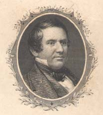

Alexander H. H. Stuart,
University of Virginia Special Collections
|
Alexander Hugh Holmes Stuart came from a political family. His father, Judge Archibald Stuart, was a presidential elector in six elections from 1808 to 1828. His four sons, Thomas Jefferson, Archibald P., Gerard B., and Alexander H. H. Stuart, remained in Augusta County and participated actively in public life. Stuart was born in Staunton on April 2, 1807. After a year of study at William & Mary College, Stuart took the law course at the University of Virginia and graduated at the age of twenty-one. In 1836 Stuart, a successful lawyer in Staunton, entered politics. He was elected a delegate in the Virginia state legislature and was continuously reelected until 1839, when he stepped down. Stuart stood from the Clay wing of the Jacksonian party and he began to identify his interests in the new Whig party. He ran for Congress in 1840 as a Whig and was elected, serving one term. Stuart was elected a presidential elector in both 1844 and 1848 for the Clay and Taylor tickets respectively. In 1850 President Millard Fillmore appointed Stuart secretary of the interior. Stuart continued to work in electoral politics and served as a member of the convention of 1856 which nominated Fillmore for the presidency. Stuart reentered Virginia electoral politics as a candidate for the State Senate. He ran on the Whig Party principles and won, serving from 1857 to 1861. Stuart stood fast for unionism in the secession crisis in the winter of 1860-61. He was elected to attend the secession convention and represent Augusta along with two other unionists--George Baylor and John B. Baldwin. On November 17, Alexander H. H. Stuart led a mass meeting at the courthouse, "for the preservation of the Union in the present alarming condition of the country. Despite his Unionism, Alexander H. H. Stuart would not accept the use of force against the seceded states, a stance that would eventually force him into war. After the war, Stuart and other Augusta County leaders reaffirmed their allegiance to the Union and petitioned the federal government for a lenient restoration. Stuart ran for Congress in October 1865 even though he could not take the required oath of allegiance, but Congress refused to seat members from the former Confederate states. Stuart served as president of the Conservative party's founding convention. He initially opposed black suffrage, but by 1868 began advocating "universal suffrage and universal amnesty," enfranchising black men without disfranchising former Confederates. This compromise eventually enabled the restoration of Virginia to the Union. The following links provide access to |
Stuart Household:
1860 Census |
1860 Slaveowner Census |
1870 Census
Alexander H. H. Stuart and his correspondents discuss slavery and abolitionism, political appointments, business matters, state and national politics, family affairs including the death of Stuart's son, and John Brown's raid on Harper's Ferry.
Return to the Eve of War Personal Papers
Alexander H. H. Stuart and his correspondents discuss the possible division of Virginia over the secession question, the popular vote for secession in Virginia, political debates in Richmond, John Brown's raid on Harper's Ferry, and diplomatic relations with England.
Return to the War Years Personal Papers
In this letter, Stuart asks cousin Ellen for information, explaining that he intends to write a history of their family. He outlines some facts about the first Stuart to come to America.
Return to the Aftermath Personal Papers